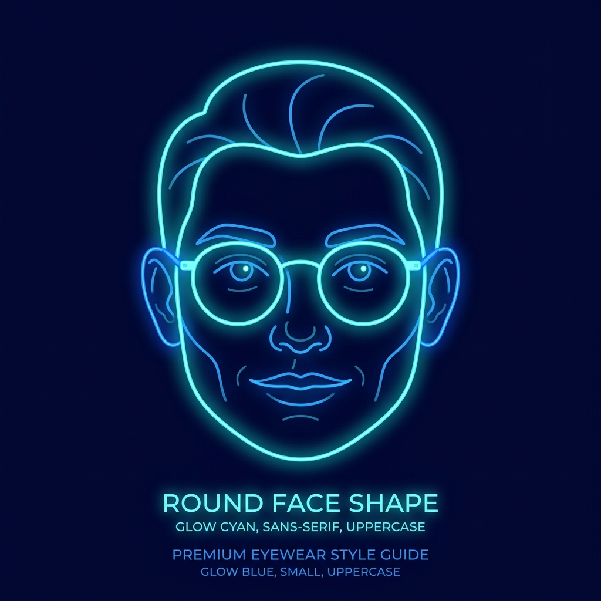
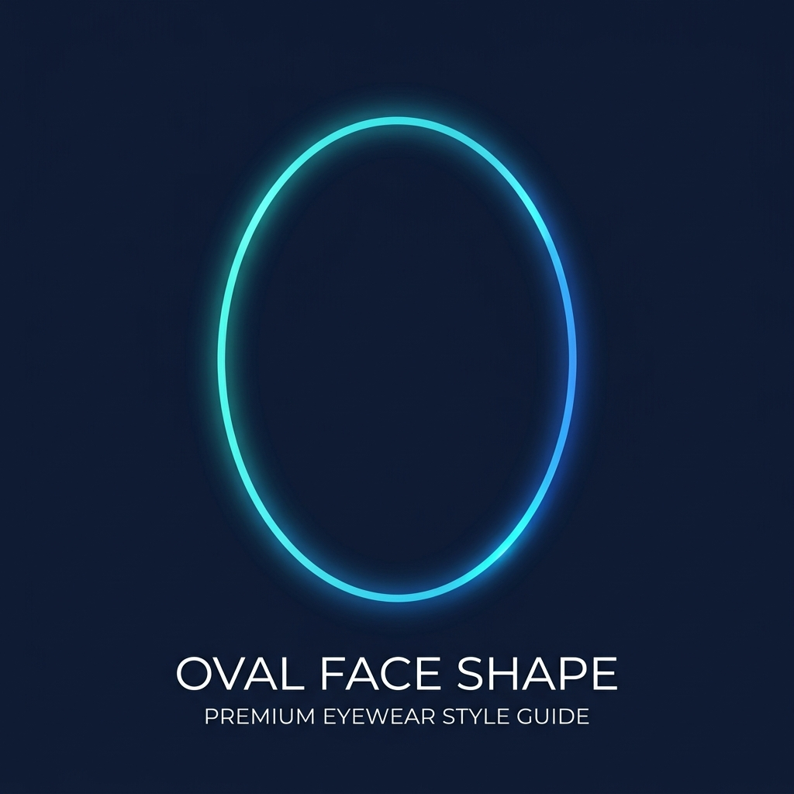
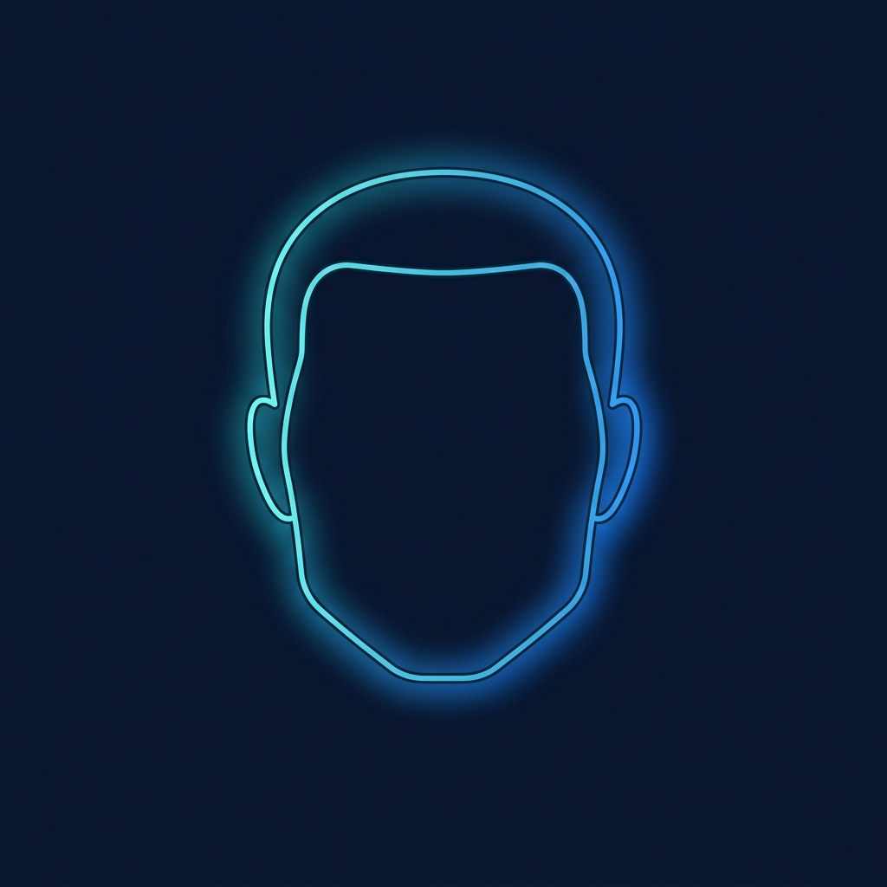
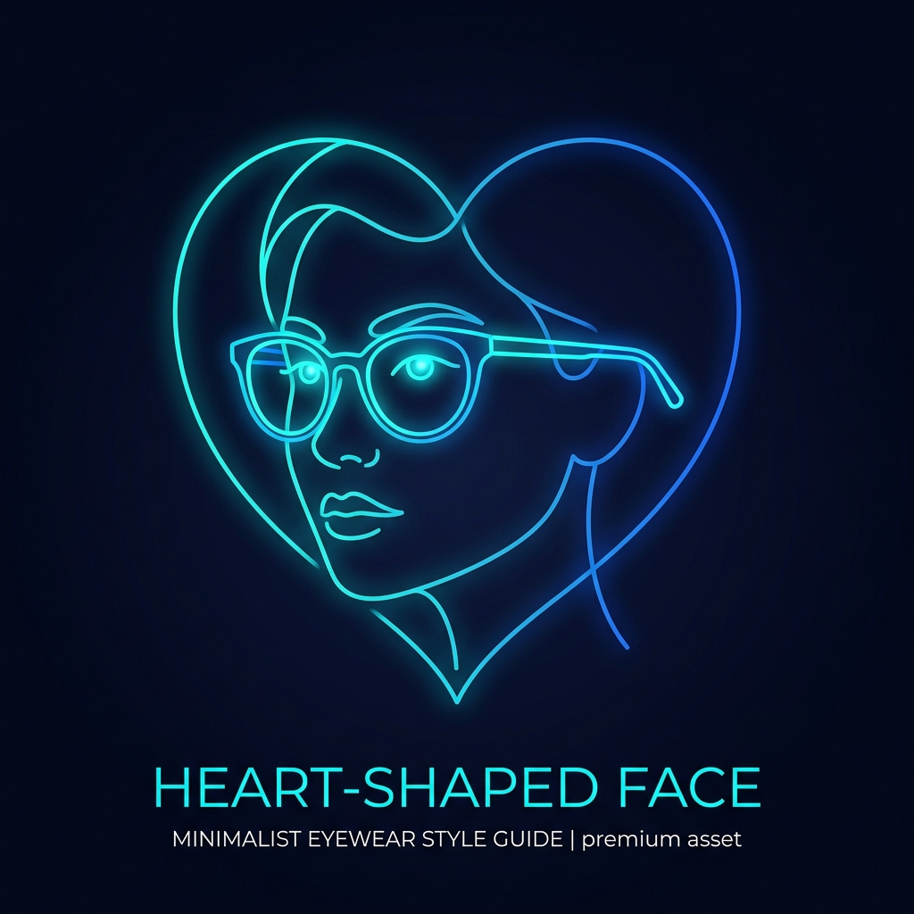
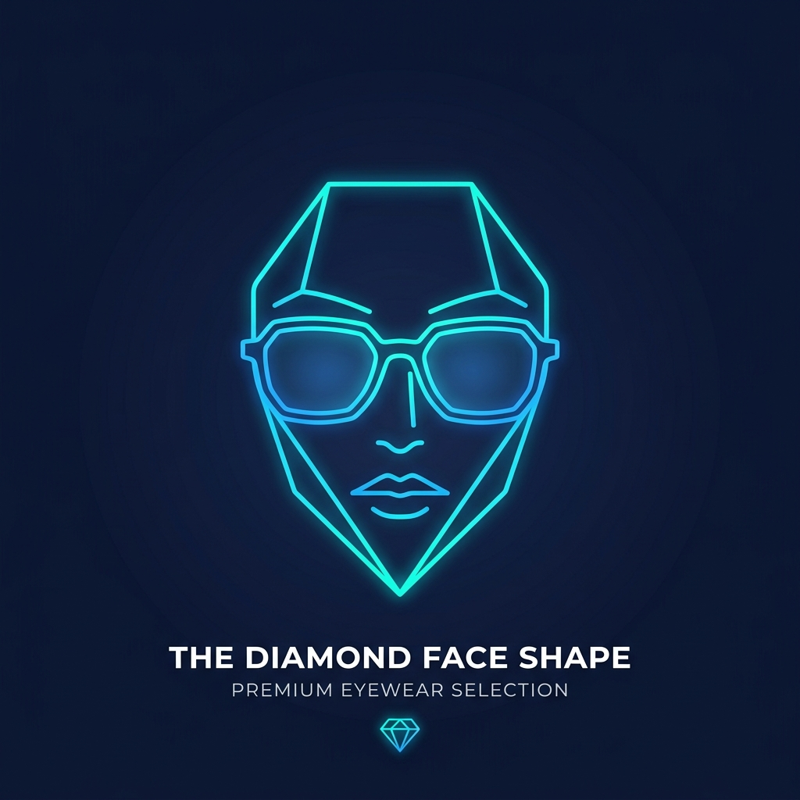

Every face is unique. Select your shape below to see tailored frame recommendations.

Round faces have soft curves with similar width and height. Angular frames — rectangles and squares — add structure and create the illusion of length.

Balanced proportions make oval faces the most versatile — nearly every frame shape complements this face type. Use the opportunity to make a style statement.

A strong jawline and broad forehead define square faces. Round or oval frames soften these angles and bring balance to your features.

Heart-shaped faces are widest at the forehead, narrowing to the chin. Light, bottom-heavy frames balance proportions beautifully.

Diamond faces feature high, dramatic cheekbones with a narrow forehead and chin. Oval and cat-eye frames beautifully highlight this structure.
See exactly how each recommended style looks on your own face before you buy.
Our in-house stylists can confirm your face shape and recommend frames in person or virtually.